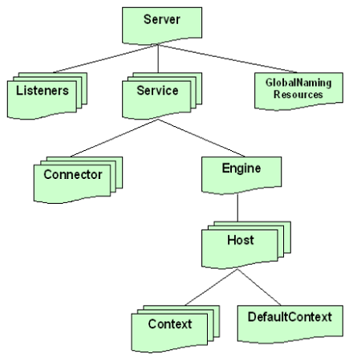

| Referencia | Descripcion | Ejemplo |
|---|---|---|
| Tomcat |
bin : ejecutables y scripts para arrancar y parar Tomcat. common : clases y librerías compartidas entre Tomcat y las aplicaciones web. Las clases se deben colocar en common/classes, mientras que las librerías en formato JAR se deben poner en common/lib. conf : ficheros de configuración. logs : directorio donde se guardan por defecto los logs. server : las clases que componen Tomcat. shared : clases compartidas por todas las aplicaciones web. webapps : directorio usado por defecto como raíz donde se colocan todas las aplicaciones web. work y temp : directorios para almacenar información temporal |
Tomcat está compuesto por una serie de módulos cuyo comportamiento es altamente configurable. Incluso se pueden cambiar las clases que utiliza Tomcat por clases propias modificando el fichero server.xml  |
| LOGS | tinen como unica finalidad primordial es la de registrar los eventos del servidor y de las aplicaciones para poder realizar una depuración en caso de que se produzca algún error. |
Estos ficheros se encuentran dentro de la carpeta logs * catalina : logger global definido al nivel del engine. * localhost : logger global a todas las aplicaciones del host localhost. * manager : logger que utiliza el manager de Tomcat. * admin : logger que utiliza la aplicación de administración. |
| Ficheros de Configuracion |
server.xml : el fichero principal de configuración. web.xml : es un fichero en el formato estándar para aplicaciones web con servlets, que contiene la configuración global a todas las aplicaciones. tomcat-users.xml: lista de usuarios y contraseñas para autentificación. catalina.policy : políticas de seguridad para la ejecución del servidor. |
|